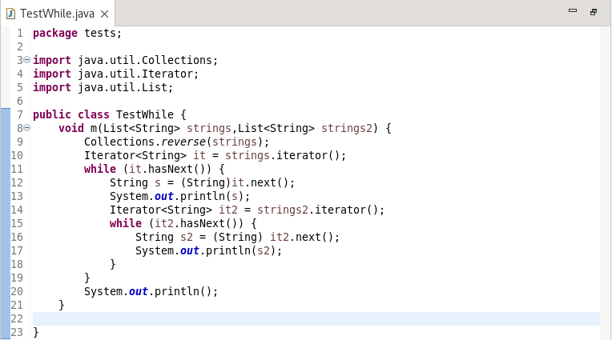
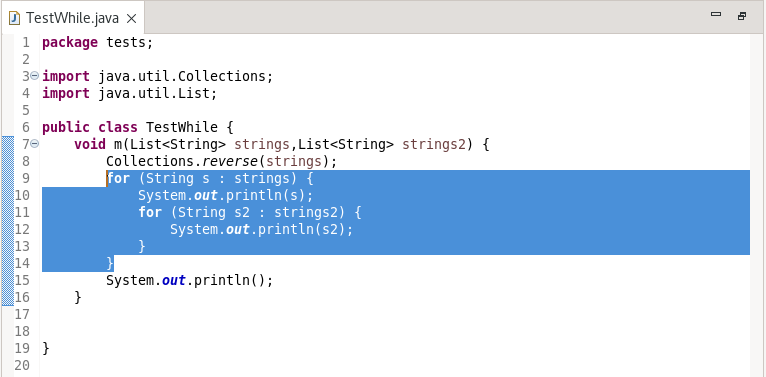
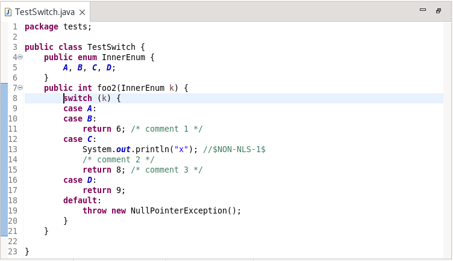
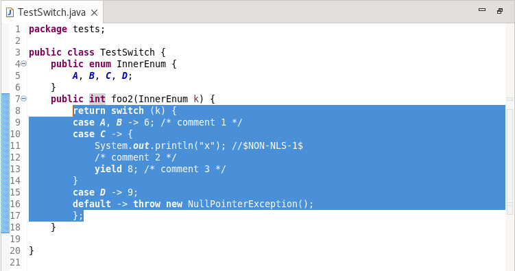
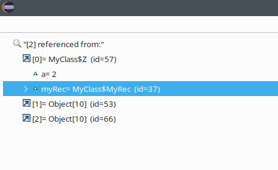

JUnit |
|
Java Editor |
|
| Convert while loops to enhanced for loops |
The clean-up to convert to use enhanced for loops where possible has been enhanced to convert eligible while statements that use an iterator into enhanced for loops. The current clean-up already support converting for loops using an iterator into an enhanced for loop.
To apply the cleanup, select the Java 5 Convert to enhanced 'for' loops checkbox on the Java Feature tab in your cleanup profile. With the cleanup, the following:  Is changed to:  The secondary option: Only if loop variable used applies as normal with loops that do not access the loop variable being ignored. |
| Convert to switch expression |
The clean-up to convert to use a switch expression where possible has been enhanced to recognize switch statements that have every case either end in a return statement or a throw of an exception. In such a case the switch statement is converted into a return of a switch expression.
To apply the cleanup, select the Java 14 Convert to switch expression where possible checkbox on the Java Feature tab in your cleanup profile. With the cleanup, the following:  Is changed to:  |
Java Views and Dialogs |
|
Java Compiler |
|
Java Formatter |
|
Debug |
|
| Double clicking in the "AllReferences and "AllInstances" popup navigates to the type |
Previously, the "All References" and "All Instances" popup wasn't acted on clicking on any of the shown items, this is improved, so if the selected variable or field type's source code is available, the editor tries to open it, and navigate to the declaration.  |
JDT Developers |
|